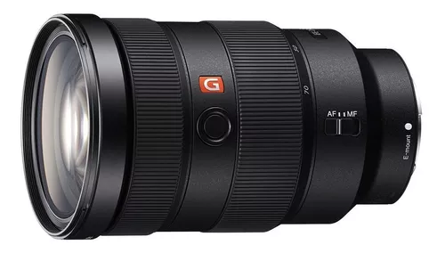
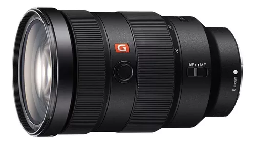
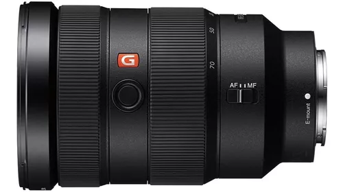

Lente Sony Fe 24-70 Mm F2.8 Gm - Sel2470gm
Montura tipo E con formato Full Frame, Zoom estándar G Master, Resolución y detalles sin precedentes Cubierta (ALC-SH141) Tapa frontal de la lente (ALC-F82S) Tapa posterior de la lente (ALC-R1EM) Funda